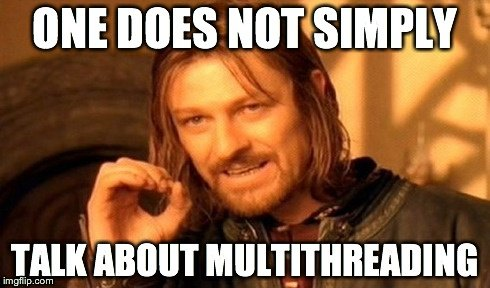
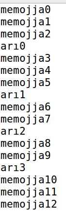
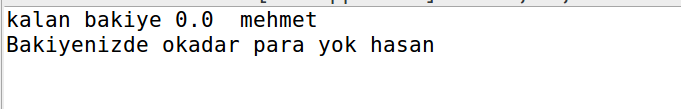

Merhaba arkadaslar bugun threadlerden bahsedecegim.Threadler bir program içerisinde birden fazla işlemin gerçekleştirilmesini saglar.Yazdıgımız programlarda nasıl main methodu varsa threadlerde de main thread vardır ilk çalışır ve en son biter.Main thread durduruldugu zaman bütün threadler durdurulur.
Ne yani nerelerde kullanicam ben bunu ?
Soyleki, Mesela web sunucularıni dusunun.Her gelen client yani kullanıcı için bir thread açar.Her kullanıcı kendi threadınde işlem yapar.Yada gmail hesabınızı düşünün.Mail atarken diğer yandan size mail gelmeye devam edıyor.Yada oynadıgınız oyunlar,en heyecanlı yerinde çat diye reklam gelir hani işte oda bir thread :).
Javada bir thread oluşturmanın 2 farklı yolu vardır.
- Runnable interface’inden implement etmek.
- Thread sınıfından extends etmek.
İkisindede birbirine benzerdir aslında.Farkları biri sınıf diğerinin interface olmasından kaynaklanıyor aslında.
- Runnable interface oldugu için nesne olusturulmaz.
- Thread sınıfından ise bir obje oluşturur ve o objeyi start() methodu ile çalıştırıp threadleri başlatabiliriz.
Kullanacaginiz yere gore degis tabiki ama Javada coklu kalitim mumkun olmadigindan bir kere extends etme hakkimiz var onuda thread de harcamak mantikli degil gibi.O yuzden siz thread olustururken Runnable interface ini implemente edin tabi bu benim sahsi gorusum.Gelin en onemli methodlarina bir bakalim;
sleep() : Milisaniye cinsinden int parametre alır.Ve aldıgı deger süresince threadı uyutur.
isAlive() : Thread çalışıyor mu diye kontrol eder.(Javada isXXX() diye bir method varsa dönüş tipi boolean dır.)
isİnterrupted() : Thread bekliyor mu diye kontrol eder.
setPriority() : Thread e öncelik verir.( setPriority(Thread.MAX_PRIORITY) )
notify() : Threadin durumunu bildirme methodu.
Gelin ufak bir ornek uzerinden konuyu pekistirelim ;
public class ThreadDeneme {
public static void main(String[] args) {
ThreadRun tr = new ThreadRun();
ThreadRun tr1 = new ThreadRun();
tr1.threadName("memojja");
tr.threadName("arı");
tr1.start();
tr.start();
}
static class ThreadRun extends Thread {
String name;
public void threadName(String name) {
this.name = name;
}
@Override
public void run() {
for (int i = 0; i < 300; i++) {
System.out.println(name + i);
}
}
}
}tr.start() dedigimiz anda run() methodu tetiklendi ve threadimiz calismaya basladi.

Görüldüğü üzere kafalarına göre çalışıyor.Belirli bir siralari yok.Peki bu iyi birsey mi yoksa kotu birsey mi ? Kotu birsey.Peki bunu nasil duzeltebiliriz bir ornek uzerinden anlatiyim;
Mesela bir öğrenci kayıt sistemi yaptık.Ve öğrenci diye bir objemiz var.Ögrenci notlarını indirirken hoca bir yandan ögrencinin notunu değiştiriyor.İşte böyle durumlarda methodları kitlememiz lazım.Biri birşey yaparken digeri kitlensin.1.sıradakinin işi bittikten sonra 2.sıradaki devam etsin.İşte bunlar synchronized method ve objelerle mümkün.Ufak bir proje yapalım ve bu konu pekişsin.
Hemen projeyi anlatıyım.BankaHesap.java adında bir sınıfımız olacak bu bizim kasamız.Birde ParaCekme.java isminde bir sınıfımız olucak bunun içerisinde bir main methodumuz bide threadımız olucak.Aynı objeden 2 kişi para çekıcek biri çektikten sonra digeri çekicek synchronized sayesinde şimdi kodumuzu inceleyelim.
BankaHesap.java
package Bankamatik;
public class BankaHesap {
private double bakiye;
public BankaHesap(double bakiye) {
this.bakiye = bakiye;
}
synchronized void paraCek(double tutar, String kim) {
if (tutar > bakiye)
System.out.println("Bakiyenizde okadar para yok " + kim);
else
{
bakiye -= tutar;
System.out.println("kalan bakiye " + bakiye + " " + kim);
}
}
}ParaCekme.java
package Bankamatik;
public class ParaCekme {
public static void main(String[] args) {
BankaHesap b1 = new BankaHesap(6000);
ParaCekmeThread pc1 = new ParaCekmeThread(b1, 6000, "mehmet");
ParaCekmeThread pc2 = new ParaCekmeThread(b1, 6000, "hasan");
pc1.start();
pc2.start();
}
static class ParaCekmeThread extends Thread {
BankaHesap b1;
double tutar;
String isim;
public ParaCekmeThread(BankaHesap b1, double tutar, String isim) {
this.b1 = b1;
this.tutar = tutar;
this.isim = isim;
}
@Override
public void run() {
b1.paraCek(6000, isim);
}
}
}Ekran ciktitisi;

Goruldugu gibi sirayla erismek durumunda kaliyorlar ayni hesap uzerinden mehmet hasandan once 6000 lira cektigi icin hasana bakiye yetersiz ciktisini verdi.synchronized yapmasaydik ikiside ayni anda erisdiginde ikisindede 6000 lira gozukucek ve ikiside parayi cekicekti totalda 12000 lira cekilmis olucakti. :)
Umarim faydali olmustur arkadaslar esen kalin.